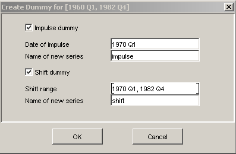

Create Dummy Dialog
This dialog allows to build shift and impulse dummy
variables. The selected variable defines the sample range of
the new dummy variable.
-
One can select the timing of the shift/impulse by editing
the respective text fields. The selected range/date is then
set to the value 1, all other values to 0.
-
NAME OF NEW SERIES is the name of the created
time series in the time series list. One should make sure
that the name does not already exist, otherwise a dialog
will ask to overwrite the existing series.
-
The created dummy series is automatically marked with the
deterministic property.
